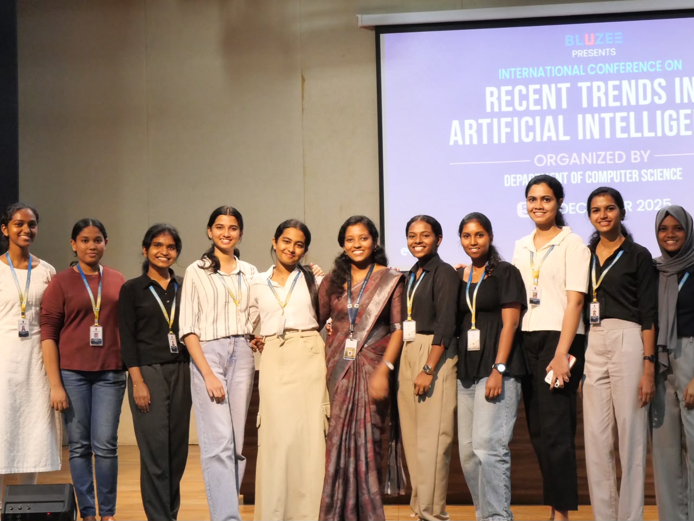
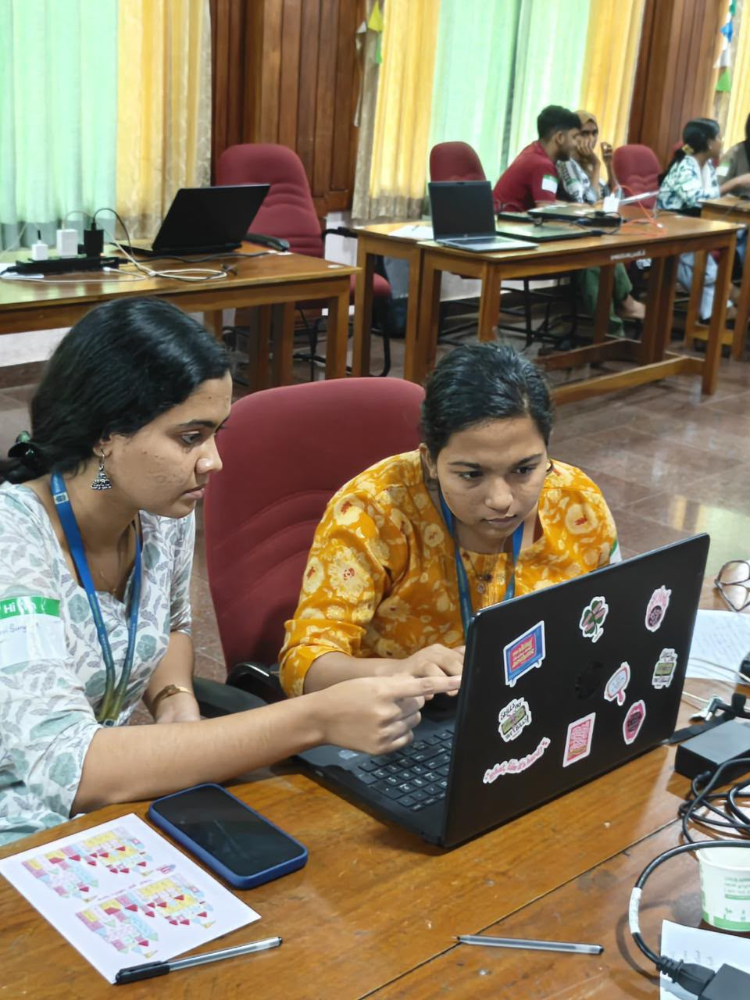
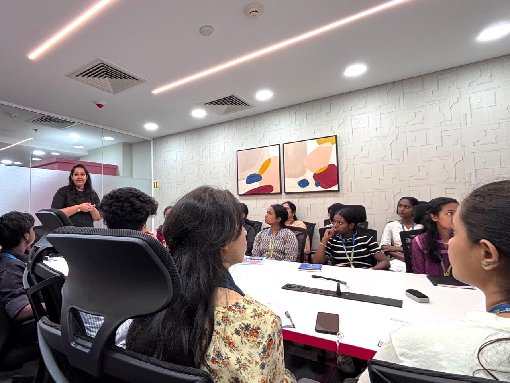
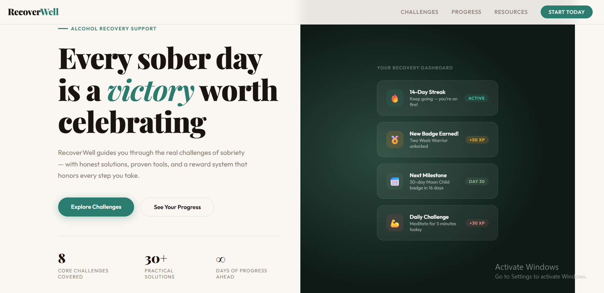

Hello, I'm
Gayathri Surya A
Integrated MSc Computer Science
Artificial Intelligence & Machine Learning
Passionate about Artificial Intelligence, Machine Learning, Python and Web Development.

Hello, I'm
Passionate about Artificial Intelligence, Machine Learning, Python and Web Development.
Hello! I’m Gayathri Surya, a second-year Integrated MSc Computer Science student specializing in Artificial Intelligence and Machine Learning at Bharata Mata College. I am from Kozhikode, Kerala, and I have a deep interest in technology, continuous learning, and solving real-world problems through innovative ideas. My journey in computer science has motivated me to explore Artificial Intelligence, Machine Learning, Python, Web Development, and Generative AI while continuously improving my technical and creative abilities. I enjoy building projects that transform ideas into practical solutions and help me gain hands-on experience. Alongside academics, I actively participate in workshops, certification programs, and technical events to expand my knowledge and stay updated with emerging technologies. I believe that every project and every learning opportunity contributes to my growth, strengthening my problem-solving skills, adaptability, and confidence. I am always eager to learn, collaborate with others, and take on new challenges that help me grow both personally and professionally while making meaningful contributions through technology.

Paper Presentation – "Influence of Artificial Intelligence in Indian Elections"

International Conference on Recent AI Trends

TinkerHub Hackathon

Industrial Visit to Qubiqon
Specialization: Artificial Intelligence & Machine Learning
Current Year: Second Year
College: Bharata Mata College, Thrikkakara, Ernakulam

Designed an interactive Power BI dashboard to analyze Flipkart sales performance using dynamic visualizations and filters. The dashboard provides insights into sales, ratings, monthly trends, payment methods, and category-wise analysis.

Developed an interactive HR Analytics Dashboard using Power BI to analyze employee count, salaries, departments, gender distribution, and workforce trends with interactive filters.

RecoverWell is a web-based recovery support platform developed
during a TinkerHub Hackathon to help individuals overcome
alcohol addiction through motivation, progress tracking,
milestone achievements, and behavioral support.
GitHub Repository:
https://lnkd.in/gm_sZijj
📞 Phone: 7356830833
📧 Email: gayathrisuryaa26@gmail.com
💼 LinkedIn:
linkedin.com/in/gayathri-surya-196101388
💻 GitHub:
github.com/gayathrisuryaa04-byte